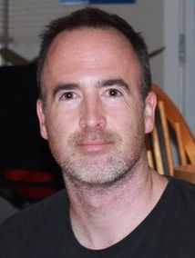

|
Richard T. Vaughan
Associate Professor vaughan@sfu.ca Office: TASC1 8009 |
 |
autonomous robots; multi-robot systems; human-robot interaction, robot software engineering
I direct the Autonomy Lab which builds life-like machines. Our research goal is to increase the autonomy (i.e. freedom of action and energy management) of robots and other machines. My research has two main themes:
I am an Associate Member of the Behavioural Ecology Research Group at SFU.
My lab is part of the NSERC Field Robotics Network.